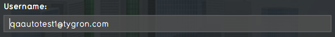
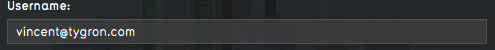
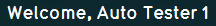
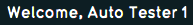

import logging; reload(logging) FORMAT=("%(asctime) -8s %(message) s") logging.basicConfig(format=FORMAT, filename="TestLog.txt", level=logging.DEBUG) logging.info("[info Starting Multi Player client...") #Win & Lin if Settings.isWindows() or Settings.isLinux(): dragDrop(Pattern().targetOffset(265,6), Pattern().targetOffset(-264,10)) paste("qaautotest1@tygron.com") type(Key.TAB) paste("autotest1qa") click() #Mac elif Settings.isMac(): dragDrop(Pattern().targetOffset(234,6), Pattern().targetOffset(-235,7)) paste("qaautotest1@tygron.com") type(Key.TAB) paste("autotest1qa") click() if exists(, 5) or (, 5): print"[success] Client is started and ready!" logging.info("[success] Client is started and ready!") else: print"[error] Client is not ready (yet)!" logging.error("[error] Client is not ready (yet)!") exit(1)